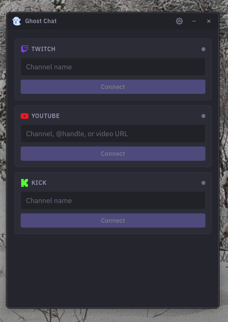
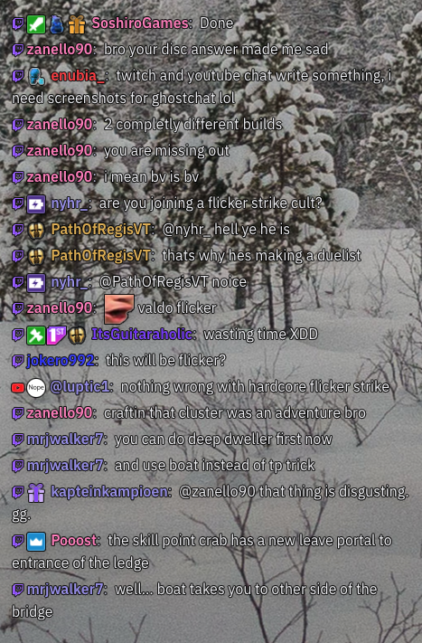
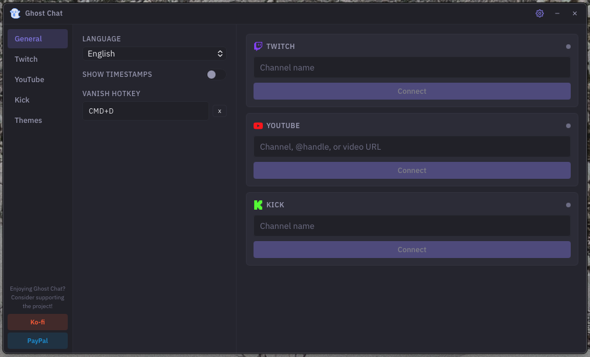
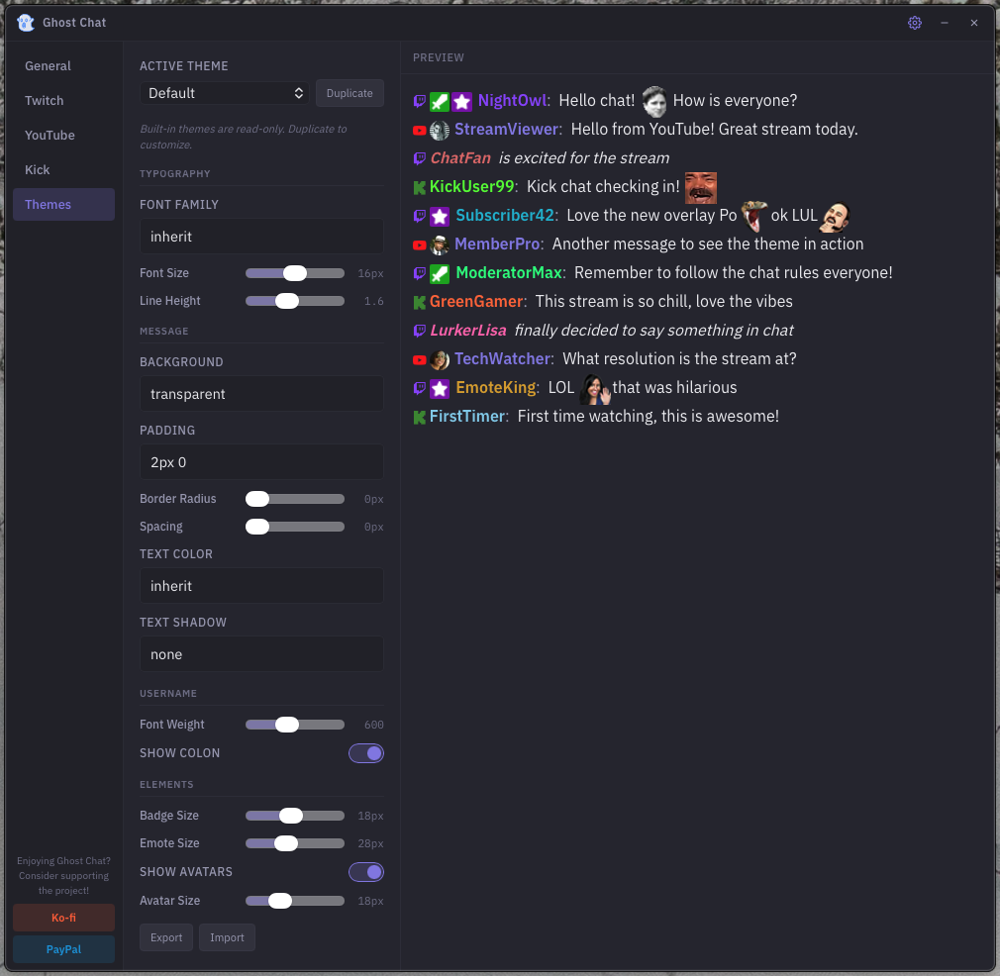

Desktop chat overlay
for streamers
Ghost Chat puts your live chat on screen with a transparent, customizable overlay. Supports Twitch, YouTube, and Kick — no login required.
Available for macOS and Windows

Built for streamers
Everything you need to keep chat visible while you stream, nothing you don't.
Multi-platform
Connect to Twitch, YouTube, and Kick simultaneously. Rumble support is on the way.
Custom themes
Choose from built-in themes or create your own. Full control over colors, fonts, and layout.
Global hotkey
Toggle the overlay on and off with a single keypress. Works from any application.
Transparent overlay
The chat window sits on top of your content with a fully transparent background.
Lightweight and native
Built with Go and WebView. Minimal resource usage, instant startup, no Electron bloat.
Open source
Fully open source. Inspect the code, contribute, or fork it.
Getting started
Watch the tutorial to get up and running in minutes.
See it in action
A few glimpses of Ghost Chat in use.

Transparent overlay
Settings panel
Theme editorFrequently asked questions
What platforms are supported?
Ghost Chat currently supports Twitch, YouTube, and Kick. Rumble support is in development and will be available in a future update.
Is Ghost Chat free?
Yes, completely free and open source. No premium tiers, no subscriptions, no ads.
Does it work on Mac and Windows?
Yes. Ghost Chat provides native builds for both macOS and Windows. Download the right version for your system from the releases page.
Do I need to log in?
No. Ghost Chat connects to chat anonymously. You don't need to provide a login, OAuth token, or API key. Just enter a channel name and go.
How do I set it up with OBS?
Add a Window Capture source in OBS and point it to the Ghost Chat window. The transparent background will be captured automatically, so chat messages appear directly over your stream content.
Windows shows a "Windows protected your PC" warning
This is Windows Defender SmartScreen and it appears because Ghost Chat isn't signed with a Microsoft certificate. Click "More info" and then "Run anyway." You only need to do this once.
macOS says Ghost Chat can't be opened or is damaged
This happens because Ghost Chat isn't code-signed with an Apple developer certificate. To fix it, open a terminal and run:
xattr -rd com.apple.quarantine /Applications/ghost-chat.app
Alternatively, you can right-click (Control+Click) the app in Finder, select Open, and confirm. macOS will remember your choice for future launches.
Why doesn't Ghost Chat appear on top of my game?
This depends on your game's display mode. Games running in exclusive fullscreen take full control of the display, so no overlay can appear on top. Switch your game to windowed or borderless fullscreen mode and Ghost Chat will be able to overlay it.
Ghost Chat isn't launching or is behaving unexpectedly
This is usually caused by a corrupted config file. Delete the config and relaunch — Ghost Chat will recreate it with default settings. The config file is located at:
Windows: %APPDATA%/ghost-chat/config.jsonMac: ~/Library/Application Support/ghost-chat/config.json
Where can I report bugs or request features?
Head over to the GitHub issues page or join the Discord server. Bug reports and feature requests are always welcome.